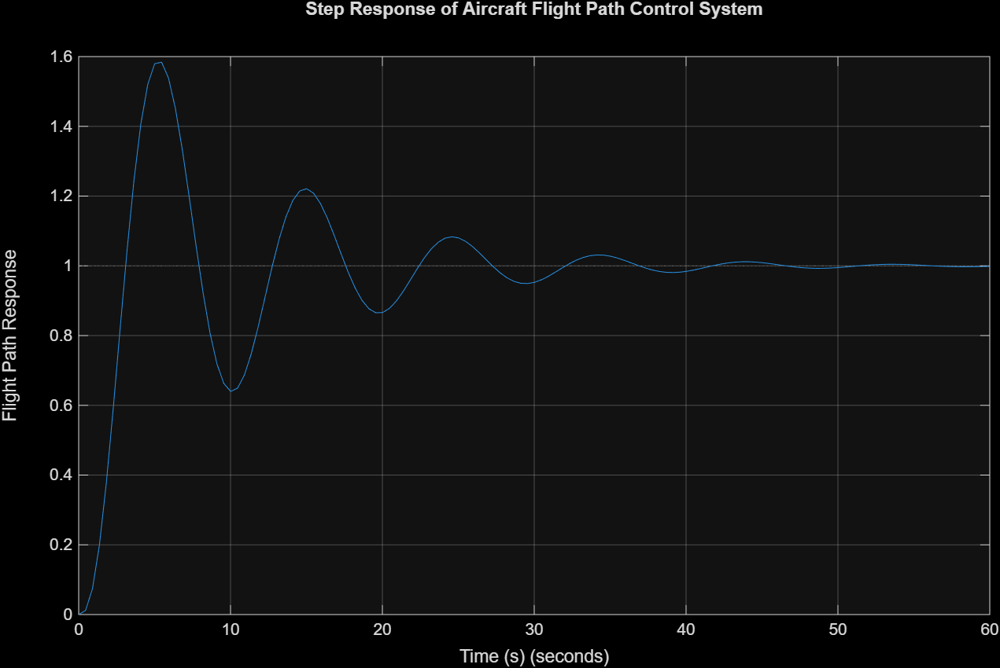
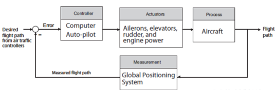
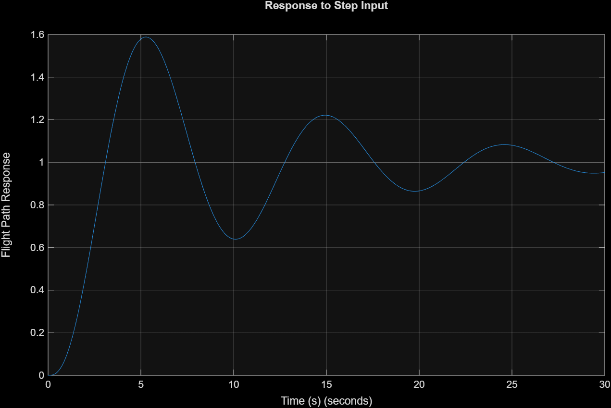
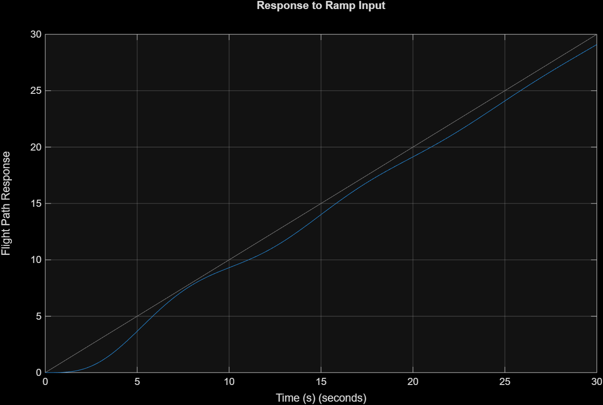
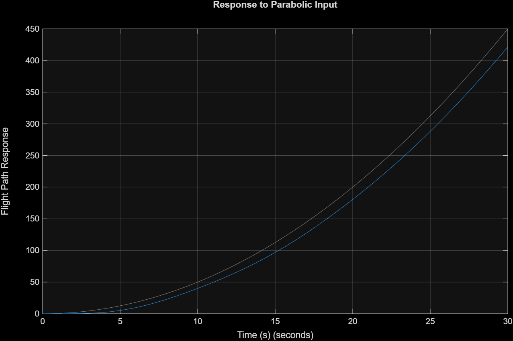
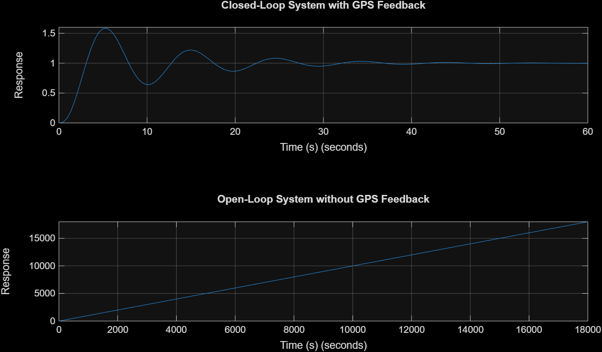

{kind=link}
Autopilot Controller
Receives the flight-path error and produces the command required to correct the aircraft trajectory.
CONTROL SYSTEMS • MATLAB • FEEDBACK ANALYSIS
A MATLAB-based control systems project modelling an aircraft flight path using autopilot control, actuator dynamics, aircraft process behaviour, and GPS measurement feedback. The system was analysed using step, ramp, and parabolic inputs together with a comparison between closed-loop and open-loop operation.

Academic Control Systems Project01 • OVERVIEW
This project investigated an aircraft flight path control system using classical control-system modelling and MATLAB simulation.
The system was represented as a closed-loop structure in which the desired flight path is compared with the measured flight path. The resulting error is processed by an autopilot controller, which commands the aircraft actuators before the GPS measurement system feeds the resulting flight path back into the control loop.
The model was then tested using different reference inputs to study tracking performance, stability, overshoot, oscillation, and settling behaviour.
02 • SYSTEM MODEL
The control system consists of four main elements: an autopilot controller, aircraft actuators, the aircraft itself as the controlled process, and a GPS measurement system.
The measured flight path is returned to the summing point as feedback. The difference between the commanded and measured paths produces the error signal used by the controller.

Receives the flight-path error and produces the command required to correct the aircraft trajectory.
Represent the ailerons, elevators, rudder, and engine power used to change the aircraft flight path.
Represents the aircraft dynamics affected by the controller and actuator commands.
Measures the resulting flight path and returns it to the feedback loop so tracking error can be corrected.
03 • MATHEMATICAL MODEL
The aircraft control system was represented using a closed-loop transfer function containing controller, actuator, aircraft-process, and GPS feedback gains.
Time constants were also included to represent the dynamic behaviour of the actuator, aircraft process, and GPS measurement system.
Normalized engineering values were used because specific aircraft parameters were not supplied for the assignment. The selected values allowed the dynamic behaviour of the system to be demonstrated while maintaining a stable closed-loop response.
Kc = 1
Ka = 1
Kp = 1
Kh = 1
Ta = 0.5 s
Tp = 2 s
Th = 0.1 s
04 • MATLAB IMPLEMENTATION
The model was implemented in MATLAB using transfer-function representation. The script defined the simulation parameters, created the closed-loop system, generated the step response, and calculated response characteristics.
Additional simulations were then performed using step, ramp, and parabolic input signals. An open-loop version of the system was also created by removing the GPS feedback path so that the two behaviours could be compared.
clc;
clear;
close all;
% Aircraft Flight Path Control System
% Simulation Parameters
Kc = 1; % Controller gain
Ka = 1; % Actuator gain
Kp = 1; % Aircraft/process gain
Kh = 1; % GPS feedback gain
Ta = 0.5; % Actuator time constant
Tp = 2; % Aircraft/process time constant
Th = 0.1; % GPS measurement time constant
% Define Laplace variable
s = tf('s');
% Closed-loop transfer function with GPS feedback
sys_closed = (Kc*Ka*Kp*(Th*s + 1)) / ...
(s*(Ta*s + 1)*(Tp*s + 1)*(Th*s + 1) ...
+ Kc*Ka*Kp*Kh);
% Display transfer function
disp('Closed-loop Transfer Function with GPS Feedback:')
sys_closed
% Step response
figure;
step(sys_closed);
grid on;
title('Step Response of Aircraft Flight Path Control System');
xlabel('Time (s)');
ylabel('Flight Path Response');
% Step response performance values
info = stepinfo(sys_closed);
disp('Step Response Information:')
disp(info)% Time vector
t = 0:0.01:30;
% Input signals
step_input = ones(size(t));
ramp_input = t;
parabolic_input = 0.5*t.^2;
% Response to step input
figure;
lsim(sys_closed, step_input, t);
grid on;
title('Response to Step Input');
xlabel('Time (s)');
ylabel('Flight Path Response');
% Response to ramp input
figure;
lsim(sys_closed, ramp_input, t);
grid on;
title('Response to Ramp Input');
xlabel('Time (s)');
ylabel('Flight Path Response');% Response to parabolic input
figure;
lsim(sys_closed, parabolic_input, t);
grid on;
title('Response to Parabolic Input');
xlabel('Time (s)');
ylabel('Flight Path Response');
% Open-loop system when GPS feedback is removed
sys_open = (Kc*Ka*Kp) / ...
(s*(Ta*s + 1)*(Tp*s + 1));
% Compare with and without GPS feedback
figure;
step(sys_closed, sys_open);
grid on;
legend('With GPS Feedback', 'Without GPS Feedback');
title('Step Response With and Without GPS Feedback');
xlabel('Time (s)');
ylabel('Flight Path Response');
% Open-loop response information
disp('Open-loop Transfer Function without GPS Feedback:')
sys_open05 • STEP RESPONSE
The closed-loop step response exhibits underdamped behaviour. The output initially overshoots the desired value and oscillates before gradually converging toward steady state.
1.89 s
5.46 s
58.40%
35.64 s
1.584
Although the response remains stable and eventually reaches the desired steady-state value, the relatively high overshoot indicates that controller tuning could improve the transient response.
06 • INPUT RESPONSE ANALYSIS
A step input represents a sudden change in the desired flight path. The system responds rapidly but exhibits noticeable overshoot and oscillation before approaching the commanded value.
The ramp signal represents a continuously increasing command such as a steady climb or descent. The output follows the reference trend with a small tracking error caused by the actuator and aircraft dynamics.
The parabolic signal changes at an increasing rate and is more difficult for the model to track. The output follows the overall trajectory but the tracking error becomes larger as time increases.



07 • GPS FEEDBACK ANALYSIS
The final comparison investigated the role of GPS feedback by comparing the closed-loop model against an open-loop version of the aircraft system.
With feedback present, the controller can continuously compare measured and desired flight paths and reduce the resulting tracking error.
When the GPS feedback loop is removed, the model no longer automatically corrects deviations. The simulated open-loop response continues increasing instead of converging toward the desired trajectory.

08 • RESULTS
The simulations demonstrated that the closed-loop model could follow step, ramp, and parabolic inputs while remaining stable.
The comparison with the open-loop system also showed why feedback is important: without GPS measurement feedback, the simulated system lost the ability to regulate its response and correct tracking deviations.
09 • ANALYSIS CHALLENGES
The transfer function represents several physical parts of the aircraft control loop. Understanding the model required connecting mathematical terms and time constants to the controller, actuators, aircraft dynamics, and GPS measurement system.
The step response had to be analysed in terms of rise time, peak time, overshoot, settling time, and oscillation rather than judging the plot visually alone.
Step, ramp, and parabolic inputs place different demands on the control system. Comparing them helped show how tracking performance changes as the reference becomes more difficult to follow.
10 • WHAT I LEARNED
This project helped connect mathematical control-system concepts with simulated engineering behaviour.
Instead of working only with transfer-function equations, MATLAB made it possible to observe how system parameters affect overshoot, oscillation, settling behaviour, and tracking error.
It also reinforced the role of feedback in closed-loop control: measurement is not simply used for monitoring, but becomes part of the mechanism that allows the system to detect and correct deviations.
11 • FUTURE IMPROVEMENTS
Adjust the controller parameters to reduce overshoot and improve settling behaviour while maintaining system stability.
Explore PID control as a more advanced strategy for improving transient response and flight-path tracking.
Replace the normalized demonstration parameters with values based on a defined aircraft model for more realistic simulation behaviour.
Compare additional tuning configurations and quantify how parameter changes affect stability, tracking error, overshoot, and settling time.
{kind=link}
{kind=link}
{kind=link}
{kind=link}
{kind=link}